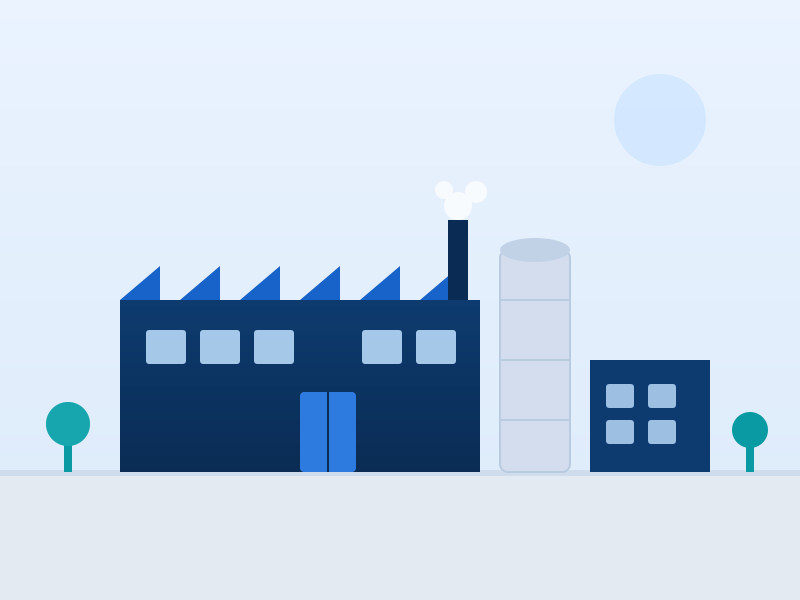
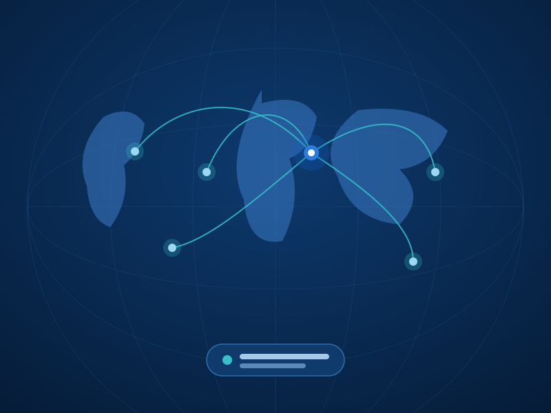

Köklü tecrübe, klinik odaklı üretim
Balton; anestezi, diyaliz, genel cerrahi, kadın doğum, kardiyoloji, radyoloji, gastroenteroloji, üroloji ve fleboloji alanlarında tek kullanımlık tıbbi malzeme üreticisidir.
1992’den bugüne süregelen üretim kültürü
Balton, 1992 yılında kurulan ve uzun, güçlü bir tecrübeye sahip olan bir tek kullanımlık tıbbi malzeme üreticisidir. Şirketimiz, koroner ve periferik stentlerin yanı sıra kendinden genişleyen stentlerin üretiminde uzmanlaşmıştır.
Bu tür ürünlerin üretimi için dünyada kullanılan güncel teknoloji ve hammaddeler kullanılmaktadır. Üretim ve kalite anlayışımız, klinik kullanım için güvenilir ve tekrarlanabilir ürünler ortaya koymayı hedefler.

Şirket tarihçesi
Kuruluşundan bugüne, üretim uzmanlığını ve uluslararası varlığını sürekli geliştiren bir şirket.
- ’92
Kuruluş
Balton, tek kullanımlık tıbbi malzeme üretmek üzere kurulur ve üretim tecrübesini geliştirmeye başlar.
- ’95
Türkiye’de faaliyet
Balton, 1995 yılından itibaren Türkiye pazarında faaliyet göstermeye başlar.
Stent uzmanlığı
Koroner, periferik ve kendinden genişleyen stentlerin üretiminde uzmanlaşma.
Küresel ihracat
Benzersiz ürünler 90’dan fazla ülkeye ihraç edilir hâle gelir.
Stent teknolojilerinde derinleşmiş üretim
Şirketimiz, farklı klinik branşlara hizmet eden geniş bir ürün yelpazesinin yanı sıra stent teknolojilerinde özel uzmanlığa sahiptir.
Koroner stentler
Koroner uygulamalar için stent ve kateter sistemleri.
Periferik stentler
Periferik damar uygulamalarına yönelik stent çözümleri.
Kendinden genişleyen stentler
Kendinden genişleyen stent üretiminde uzmanlık.
Güncel teknoloji
Üretimde dünyada kullanılan güncel teknoloji ve yöntemler.
Kaliteli hammadde
Ürün performansı için seçilmiş güncel hammaddeler.
Klinik güvenilirlik
Güvenli ve tekrarlanabilir klinik kullanım odağı.
Üniversiteler ve tıp merkezleriyle ortak çalışmalar
Polonya’daki pek çok üniversite ve tıp merkezi ile olduğu gibi; ABD, Fransa, İngiltere, Japonya, Brezilya ve Rusya gibi ülkelerle de iş birliği yapılmaktadır.

Dünya genelinde kullanılan ürünler
Benzersiz ürünlerimiz 90’dan fazla ülkeye ihraç edilmekte; Türkiye’deki faaliyetimiz 1995’ten beri kesintisiz sürmektedir.
1995’ten beri Türkiye’de
Balton, 1995 yılından itibaren Türkiye’de faaliyet göstermektedir. Yerel pazardaki köklü varlığımız, klinik ihtiyaçlara hızlı ve güvenilir biçimde yanıt vermemizi sağlar.
- Geniş ürün portföyü — sekiz klinik alanda tek kullanımlık tıbbi malzeme.
- Uzman destek — ürün ve katalog bilgileri için kurumsal iletişim.
- Sürekli tedarik — kesintisiz faaliyet ve güvenilir erişim.
Ürün portföyümüzü keşfedin
Sekiz klinik alandaki tek kullanımlık tıbbi malzeme ve stent çözümlerimizi inceleyin.